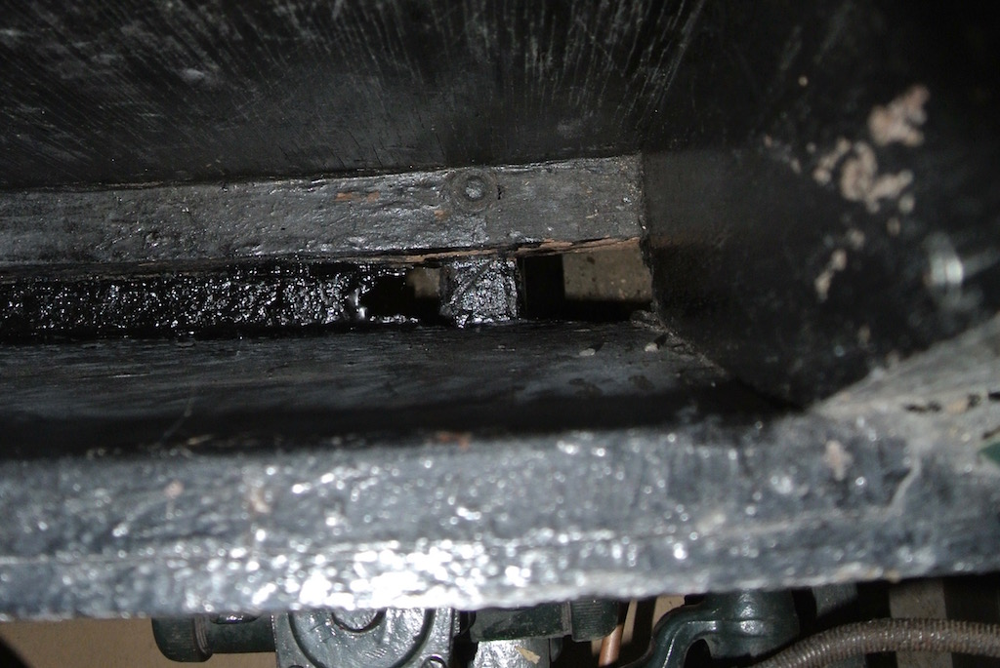

It has always been difficult to get the side screens, in their bag, into the storage box. There just didn't seem to be enough height. Looking into the box I could see what appeared to be two pieces of wood in the bottom, whereas Sherrill only shows one, which is at the rear and has the bolts that hold the body to the chassis. So I screwed a screw part-way into one end of the front piece and was able to pull it out!
The front face and the bottom of the box are metal and it was clear that the base had corroded and had been covered with a piece of wood. The photo shows the base. At the right hand side you can see the garage floor! So I cleaned up the base as best I could and painted it with black Hammerite (as in the photo). I then cut a new, thinner piece of wood, coated it several times with wood preservative and dropped it into the bottom of the box. Being thinner, the side screens (still in their bag) now fit more easily.
Return to MG TC4985© David James 2016 Last updated: 7th September 2016